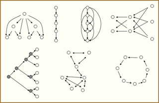
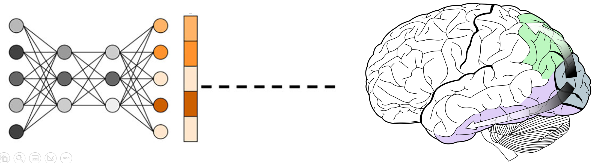

About
I am a first-year PhD candidate at the University of Edinburgh. My research investigates the alignment of causal reasoning in humans and language models. I am particularly interested in implementing component attribution methods from mechanistic interpretability to understand causal selection in language models.
I'm open to collaborations for research in developing causal reasoning benchmarks, AI safety, human-AI alignment, etc. Feel free to reach out!
Education
2025 September – Now
🎓 PhD, University of Edinburgh, supervised by Dr. Tadeg Quillien
2022 – 2024
MSc in Brain and Cognitive Sciences (Research), University of Amsterdam
2018 – 2022
BS in Computational Neuroscience, University of Southern California
Research Interests

Computational Cognitive Science

Explainable AI

Neuro-AI